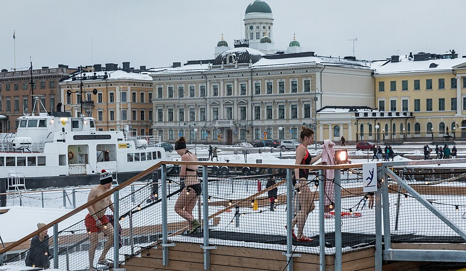
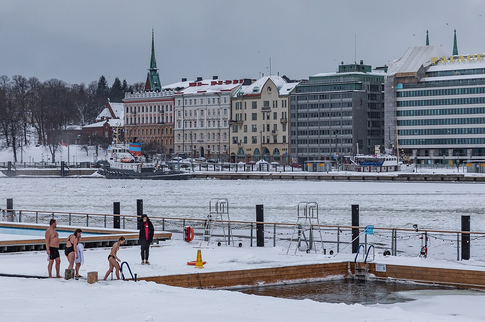
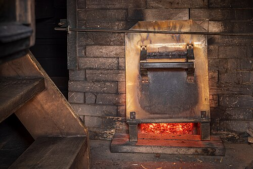
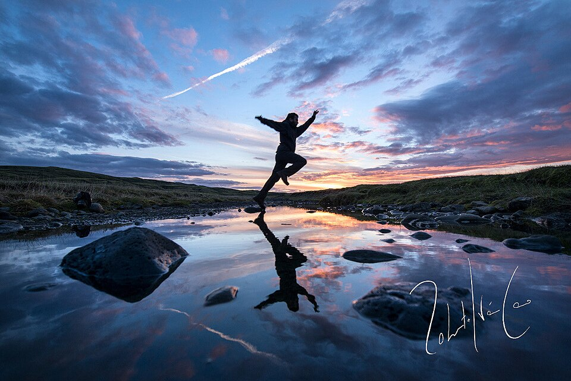
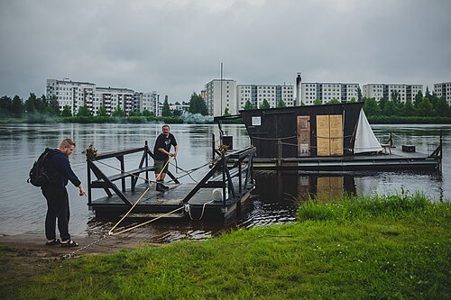
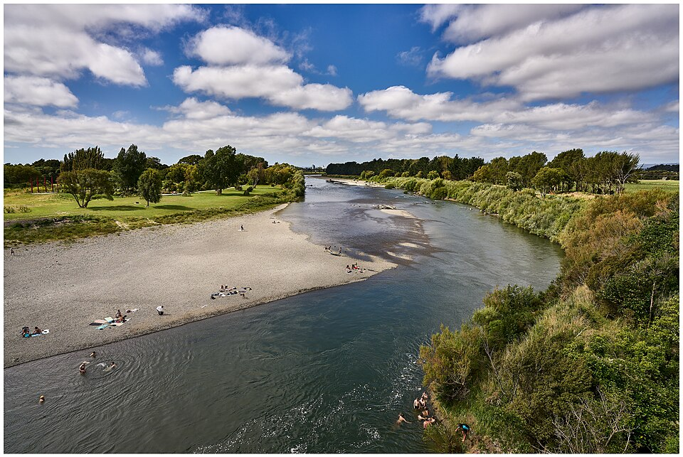

空き枠
1回90分。枠と枠のあいだの30分は、薪をくべて小屋の空気を入れ替えます。日と人数を選ぶと、入れる枠だけが押せます。
受付は2週間先まで。11月21日（土）の枠は、11月8日（日）10:00に受付を始めます。

写真：Ninara／Wikimedia Commons／CC BY 2.0
数字は残りの人数（定員6人）。残り2人以下は朱。貸切は1組だけなので「空き」か「予約済み」。終わった枠と満員の枠も残しています。
貸切と、ひとり枠
小屋はひとつ、中のベンチは6人分です。時間ごとに、1組で借りる枠と、男女別に1人ずつ入る枠を入れ替えています。
貸切
- 1組6人まで。人数で値段は変わりません（6人なら平日1人3,300円）。
- 男女いっしょに入れます。水着で入ります。
- 11:00・15:00・17:00の枠。17:00の枠は日が暮れたあとで、桟橋にランプを灯します。
- 中学生から。18歳未満は大人と一緒に。
ひとり枠（男女別）
- 9:00と13:00の枠。日によって女性の枠と男性の枠が入れ替わります（月・水・金は朝が女性、木・土・日は朝が男性）。
- 定員6人。知らない方と同じ小屋に入ります。友だちと2人で予約もできます。
- 16歳から。
値段はどれも税込。火曜は定休日（薪割りと桟橋の点検の日）です。

写真：Ninara／Wikimedia Commons／CC BY 2.0
90分の流れ
受付は土手の上の渡し小屋です。開始の15分前までに来てください。

写真：Ximonic (Simo Räsänen)／Wikimedia Commons／CC BY-SA 4.0
- −15分
渡し小屋で受付
名前を言って、ライフジャケットを受け取ります。着替えは渡し小屋の中（男女別の2室）。
- 0分
桟橋を渡って小屋へ
桟橋は12m、幅90cm。川の流れで少し揺れます。
- 5分
蒸される
室温は85〜95℃。石に水をかけるのは自由です。1回10〜12分が目安。
- 17分
川に入る
小屋の裏のはしごから淵へ。水深1.6m、流れのゆるい所にロープを張っています。11月の水温は12〜14℃。
- 20分
デッキで休む
椅子は6脚。これを3〜4回くり返します。
- 80分
片づけて桟橋を戻る
90分で次の組に小屋をあけます。渡し小屋のシャワーは枠の終わりから20分まで使えます。

飛び込みは、はしごの横の1か所だけ
川底の石が見える浅い所があるので、飛び込むのは目印の旗の間だけにしてください。泳げない方は、はしごから入ってロープにつかまれば足がつかなくても大丈夫です。ライフジャケットは川に入るとき必ず着ます。
アイスランドのラキ近くで、水の上を跳ぶ人（ゆのせではありません）。
写真：Roberto Iván Cano／Wikimedia Commons／CC BY 3.0
持ち物
持ってくる物
- 水着（ひとり枠も貸切も）
- かかとが留まるサンダル（川底が石です）
- 着替えと、バスタオル
- 飲み物（ペットボトルか水筒）
- 髪の長い方はヘアゴム
小屋で借りられる物
- ライフジャケット無料
- サウナハット無料
- バスタオル330円
- サンダル（23〜28cm）220円
- 厚手のポンチョ550円
持ちこめない物
- お酒（飲んだあとの方も入れません）
- 瓶とガラスのコップ
- アロマ水（石が割れるため）
- 石けん・シャンプーを川で使うこと

写真：Daniele Zanni／Wikimedia Commons／CC BY 3.0
借りる物は、渡し小屋で
受付のときに頼めます。代金は当日、受付で払ってください（現金と交通系ICカード）。ポンチョは11月から3月まで、12枚あります。
取り消しと、川の日の中止

写真：Geoff McKay／Wikimedia Commons／CC BY 2.0
| 取り消す日 | 取り消し料 |
|---|---|
| 枠の3日前の23:59まで | 0円 |
| 2日前・前日 | 50% |
| 当日・連絡なし | 100% |
| 日時の変更（3日前まで、1回） | 0円 |
例：11月14日（土）13:00の枠なら、11月11日（水）23:59まで無料。お支払いは予約のときにクレジットカードで。
増水と雷の日は、こちらから中止します
毎朝7:00に桟橋の量水標を読み、水位が+0.80m以上か、濁って川底が見えない日は、その日の枠をすべて中止して全額を返します。+0.50mから+0.80mの日は、サウナは開けて、川に入るのはロープの内側だけにします。雷が鳴ったら、枠の途中でも小屋から岸に上がってもらい、残りの時間に応じて返金します。
行き方
- 電車
- 柚ノ瀬線 小柚駅の東口から歩いて12分。県道を東へ、柚ノ瀬橋の手前で土手の階段を上がると、右に渡し小屋が見えます。
- 車
- 河川敷の駐車場（無料・8台）。満車のときは小柚駅前の町営駐車場（1日500円）へ。
- 受付
- 土手の上の渡し小屋。開始の15分前から。遅れるときは電話をください（0299-00-1157・架空）。
- 住所
- 小柚町 柚ノ瀬 渡し跡（どれも架空の地名です）